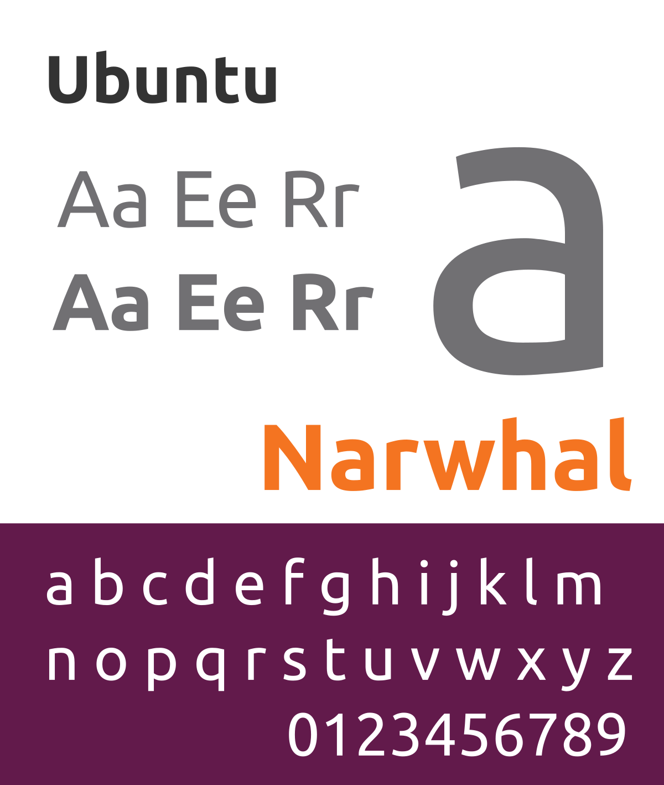

Devenu multimillionnaire après la vente de sa précédente entreprise,le sud-africain Mark Shuttleworth(ancien développeur Debian)souhaite une version facile d'accès et grand public de la distribution Debian:le projet Ubuntu est lancé en 2004.
Le 5 mars 2004,il crée la société Canonical afin de concrétiser ce projet.Le 1er juillet 2005,il crée la Ubuntu Foundation comme filet de sécurité en cas d’échec de Canonical.Cette dernière y injecte 10 millions de dollars de réserves.
Le nom de code du projet secret est:no-name-yet(pas encore de nom).Le nom de la distribution va s'organiser alors d'une manière précise.Une nouvelle version tous les six mois et des cycles de développement de deux ans sont alors annoncés(détails dans Versions).
Sur le portail chargé entre autres de lister les bugs d'Ubuntu, le premier bug constaté est resté célèbre:Mark Shuttleworth dénonce le fait que Microsoft ait une part de marché écrasante,et qu'il soit difficilement possible d'acquérir un ordinateur dans un magasin sans Windows préinstallé.Ce bug a été confirmé dans de nombreux pays,notamment en Belgique,au Canada,en France et en Suisse,et c'est un des buts d'Ubuntu de le réparer,selon les termes mêmes de Mark Shuttleworth.
Les polices Ubuntu sont des familles de polices de caractères libres conçues par la fonderie typographique Dalton Maag pour Canonical et son système d’exploitation Ubuntu,qui est devenue sa police par défaut à partir de la version 10.10.Ubuntu est une police de caractère linéale humaniste et Ubuntu Mono est son équivalent à chasse fixe.Un des créateurs de la police est Vincent Connare,créateur de la police controversée Comic Sans.
Elles sont publiées sous licence libre et sont de ce fait utilisables comme polices Web avec des services comme Google Fonts.
